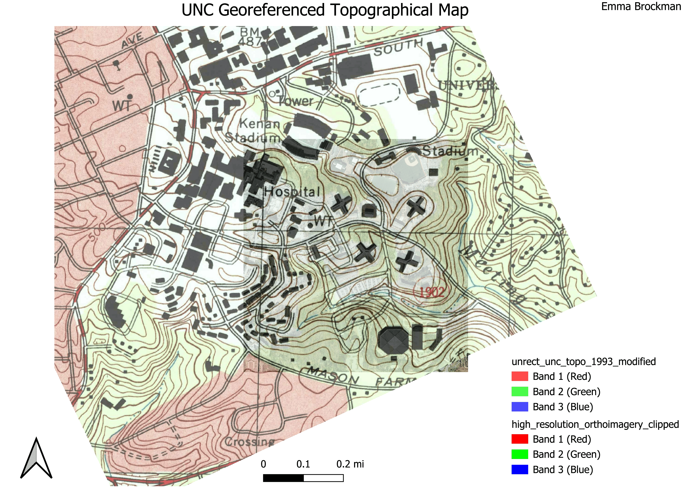

Homework 4
Hello! Thanks for checking out my HW4 page. As you can see, I've created a map image of South Campus layered with a topographical map. I decided to leave the map uncropped for aesthetic purposes, as well as so one can identify where exactly the refernce image begins and ends. If you want, you can click into the Georeference Tile link to zoom in or out on the map. Have fun!
Georeference Tile
Control Points
